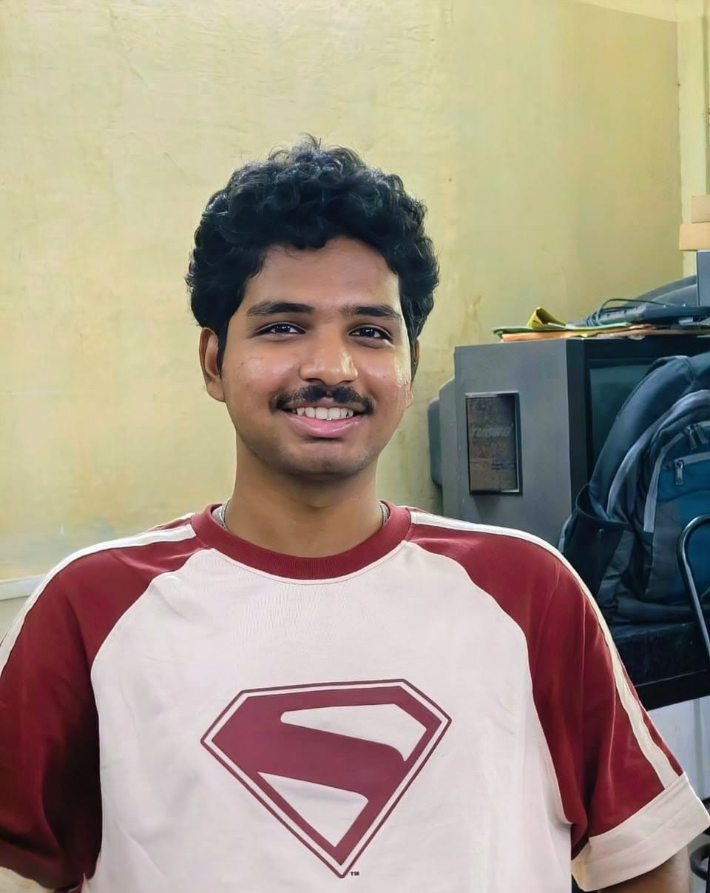

Student • Engineer • Explorer
Welcome to my digital space! I’m Abhinav Ananthu  — currently on track to complete my undergrad in 2026 and endlessly curious about how intelligent systems can be redesigned and optimized to make the most of the hardware they run on. I love diving deep into architectures — whether it’s transformer-based models or custom system designs — and I enjoy stepping back to scribble the math behind it all in my notebook, making complex ideas simpler to understand and explain.
Outside the tech bubble, you’ll probably find me playing football, dancing to random songs just to keep my spirit alive, or lost in some abstract idea, painting a canvas with whatever I believe and see from my point of view. And honestly, you’re just one good conversation away from becoming a friend of mine. Ping me if you want to collaborate on some idea to build something thats helpful and fun to use.
OSPP 2025
The project aims to integrate TensorFlow Lite Micro (TFLite-Micro), a lightweight machine learning inference engine, into the Embox Real-Time Operating System (RTOS) to enhance its capabilities for embedded machine learning applications. The primary objective is to enable efficient deployment of edge-AI solutions on resource-constrained microcontrollers and custom hardware platforms, leveraging Embox’s modular and lightweight architecture.
it's a great project If you want to test complex ML models on resource constraint devices and perform inference. Do checkout in the link below and feel free to contact me with suggestions on the same.
View Code View Demo2023
This project was my first on github ! We take an image, convert it to grayscale form , scale it down to 9x9 pixels and give it as an input to the testbench , then we implement all the steps of canny edge detection on the image , further scaling up the compressed image to its original shape for edges .
This whole compatationally heavy task was offloaded to an FPGA , So this project is to design such system in verilogHDL and test it on FPGA.
View Code2024
MM-Lounge is a research-focused project providing implementations and blueprints for modern deep learning models, particularly in computer vision and sequence data analysis. This repository is ideal for students, researchers, and developers who want to understand and rapidly prototype state-of-the-art neural networks.
I named it MM-lounge : Machine Mathematics - Lounge because I believe all of AI is just beautiful math on work!
View CodeJuly '25 - September '25
EmboxRTOS
It's an Open source program funded by many MNCs every year to improve the open source community of different open source projects. The project I worked on aims to integrate Machine Learning Inference Engine like Tensorflow(TFlite Micro) in Embox RTOS. This will allow us to use Embox RTOS for Embedded Machine Learning more effectively. This integration will streamline the development of edge‑AI applications, reduce memory footprint, and leverage Embox’s modular design to support a wide range of microcontrollers and custom hardware platforms.
March '25 - August '25
Linux Bug Fixing Program
Linux Kernel Bug fixing operates within a unique collaborative framework that spans the global open-source community.Through hands-on experience with kernel debugging tools, patch development, and community contribution workflows, this program provided invaluable insights into the complexities of low-level systems programming and the disciplined approach required for maintaining critical infrastructure software.
I mainly worked on patches in rust-for-linux project to clean ABI callback functions and porting relevant functions to use sysfs-emit() from scnprintf() function.
May '25 - July '25
Robotics lab , EdgeAi/CV - intern
I developed a custom computer vision dataset of over 15,000 images to detect and classify car fuel system components, managing the full data lifecycle — from collection to annotation — using Roboflow. I performed a detailed comparative study of object detection models including YOLOv8, YOLOv11, and Detection Transformer (DETR), enhancing the YOLOv8 architecture with custom layers to improve small-object recognition. The optimized models were then deployed on OAK-D Pro hardware, achieving real-time inference with integrated depth estimation and spatial coordinate tracking, enabling precise and efficient component localization.
January '25 - April '25
ML Research Intern
As a research intern, I worked on multilingual language modeling and transformer-based video understanding. I fine-tuned a large language model (LLM) using Fairseq and MASS on MADLAD-400 and BPCC datasets, improving multilingual performance with a focus on underrepresented languages. In parallel, I designed a Swin-UNet transformer architecture for video key-framing, enabling efficient extraction of key moments from dynamic news feed streams and optimizing temporal representation learning for downstream tasks.
Download my complete CV or explore my professional background below.
August 30, 2025
This blog is my attempt to document my journey: how I began , the hurdles I faced and the things I learned. And a roadmap that beginners can use to take their first steps into contributing to rust-for-linux and the linux kernel in general.
Read MoreJuly 7, 2025
For OSPP, I got selected to complete the project titled : `To integrate ML framework into Embox and add ML models for inferencing`. It's an amazing project in the domain of Embedded-ML to learn how to integrate several machine learning functions to RTOS and perform ML-inferencing on edge using contraiend resources
Read MoreApril 10, 2025
This blog would be really helpful for those who are interested in learning about porting ML models like Micro Speech in zephyr RTOS
Read MoreI'd love to hear from you. Whether you have a project in mind, want to collaborate, or just want to say hello—feel free to reach out.
Email: your.email@example.com
Location: Your City, Country